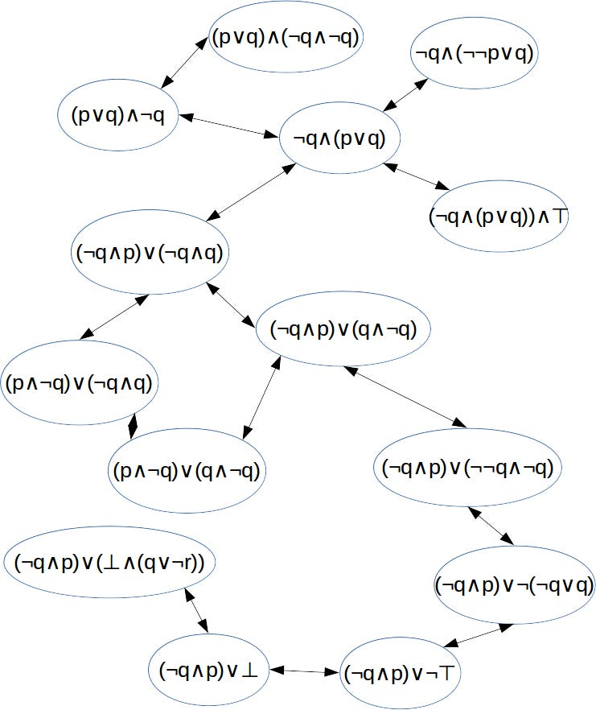
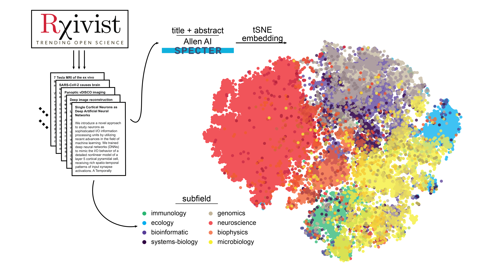
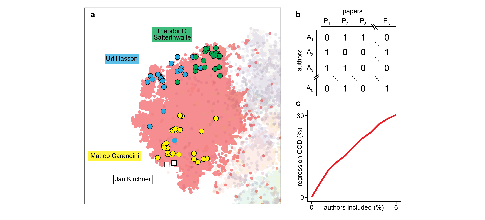

On Context And PeopleTL;DR Contrasting views of the research landscape, a prototype for automating scientific debate, and searching the importance of authorship. And an… |
Updated | ||
|---|---|---|---|
| Author | Jan Kirchner | ||
Disclaimer: This is coming from a rather neuroscience-centric perspective. I’d be curious if the patterns I describe here apply to other fields.
Previously in this series:On Scaling Academia, On Automatic Ideas, and On (Not) Reading Papers.
I’m still hung up on that question of how we might make research “scalable”[1]. Answering this question involves identifying bottlenecks and finding efficient ways to circumvent them. “Generating ideas” appeared to be one such bottleneck. But, as language models like GPT-3 shine when it comes to systematically generating ideas, the bottleneck effectively reduces to a search problem. And while the hacky prototype I threw together in a previous post probably does not quite qualify as a solution to “generating ideas”, I feel pretty optimistic that we can crack this with a larger language model and some elbow grease.
[1]
It appears more and more important to me to figure this out! In particular, we might want to be able to accelerate AI Safety research because some people argue progress is dangerously slow.
A great idea, however, is not enough to scale research. Ideas need to be _ contextualized_ [2]. Did somebody work on the idea before? What do we know about the topic already? What are disagreements, confusions, and holes in the research landscape?
[2]
Strictly speaking, they don’t need to be contextualized. There is value in rediscovering things that are already known. And there certainly is a failure mode where researchers try to cater to an audience and optimize for the virality of their projects. But those points aside, scalable science needs to be context-aware (if only for the shared vocabulary).
Finding those answers is a severe bottleneck to scaling; the problem gets harder as the number of established insights increases. I’ve argued before that the situation isalreadypretty bad and that researchers tend to be overwhelmed by the available literature. Current solutions (like “not reading papers”) are only band-aids that will not hold when we try to scale research. Therefore, we will need to change how we manage our established knowledge to make research scalable. This post is an exploration of what that might look like.
What does the research landscape look like? When I started out in research, my mental picture of the scientific landscape looked like this:
This graph demonstrates how we can transform several formulations of the same statement (p) into each other by applying “simple” transformation rules.
i.e. a graph of (hopefully) true statements connected with each other. Think “The brain is made of neurons” or “The mitochondria is the powerhouse of the cell” and how you can connect these statements across layers of abstraction. In this view, a new scientific insight is a new entry in this big graph of truth. And the goal of the scientific endeavor is to discover all the true statements. I call this the “statement-centric” view of research.
I might have picked up the statement-centric view because I’m a nerd in love with formal logic[3], but I don’t think I’m the only one. Cataloging all the knowledge of a scientific field is the goal of several ambitious projects in different subfields of science, most of which are now defunct[4]. Admittedly, there are also some people trying to catalog all of human knowledge that can report undeniablesuccesses. But I want to argue that these successes will be bounded: constructing a knowledge graph is a huge kludge[5]. Attempts to catalog all knowledge are stereotypical Hydra problems, things that grow in complexity as you fight them. The more statements you add, the more possible connections you need to consider. Thus, organizing research according to the statement-centric view results in poor scaling properties and introduces a key bottleneck.
[3]
Rude!
[4]
(The projects, not the subfields. It’s not that bad.)
[5]
I don’t endorse the following statement, but it’s too snappy not to include: “Those who can’t do teach, and those who can’t teach decorate data with semantic features.”
As always, there is another way of looking at this. When I started out in research, I did not find a big graph of (hopefully) true statements, densely interconnected and easily accessible. Instead, I found a great, disjoint, overwhelming everything.
The feeling of overwhelmedness diminished over time, but not because I successfully constructed a mental map of science’s true statements; Instead, I started to model research as something done by people. Instead of collecting true statements that float in a platonic realm, I started collecting models of the mindsets of the influential researchers in the field. Evan Hubinger has a similar strategy:
In thinking about AGI safety—and really any complex topic on which many smart people disagree—I’ve often found it very useful to build a collection of different viewpoints from people that I respect that I feel like I understand well enough to be able to think from their perspective. For example, I will often try to compare what an idea feels like when I put on my Paul Christiano hat to what it feels like when I put on my Scott Garrabrant hat.
There are a ton of reasons why this people-centric view of the research landscape might be more appropriate than the statement-centric view:
The (hopefully) true research statements sometimes turn out to be nottrue at all. Or, more commonly, they tend to be kind oftrue, but with a long list of caveats. And even if they are actually true, they often only apply in an idealized setting. The statement-centric view does not handle uncertainty well.
In contrast, the people-centric view handles uncertainty very well. Beliefs have a natural probabilistic interpretation (Cox’s theorem) and Bayes’ rule is a powerful tool for operating in epistemically fraught territory.
Our neural circuitry is not made for formal logic. Even scientists are reallybad at propositional logic. (With “ really bad ” I mean as bad as everyone, to the point where we might want to re-calibrate what we mean with “bad at logic”.) But the statement-centric view presupposes that researchers have a sophisticated understanding of logic, otherwise they cannot navigate the graph of true statements.
In contrast, our neural circuitry is (at least in part) made for understanding people. We have a very natural understanding of states of mind and can (with a little effort) simulate multiple contradictory worldviews and (sometimes) resolve them.
A bit polemic, but not strictly untrue: “Close to nothing of what makes science actually work is published as text on the web”. Knowing what certain researchers believe and what they are trying to show can explain a lot about the variability in the literature (see the Appendix). Reconstructing a line of research is a lot easier when you are familiar with what the involved researchers usually tend to look for/focus on.
The statement-centric view is implicitly underlying the many previous approaches to organizing research knowledge; none of the projects I’ve seen focus on the people who do the research. What would an approach that embraces the people-centric view look like? Would it be scalable? I’m glad you ask!
I’ve been having a ton of fun with finetuning language models on various types of text. For example, I finetuned a model on Kialo debates (a platform with extremely structured debates about complex questions)[6]. The resulting model is great at LARPing a serious debate about any topic you provide as a prompt. Here is a debate about “Is it morally permissible to wear socks?”:
[6]
I got a scrape from the authors of this paper; very clean dataset! <3
(That debate about socks is irrelevant to scaling research, but I’ve been dying to share it, and the moment seemed opportune.)
More useful models[7] are my “Buzsáki” and my “Marder” models. Both Eve Marder and György Buzsáki are famous neuroscientists who write extensively and have well-defined world views. I collected a lot of their writing (as well as interviews given, articles written about them, articles written by their students, …) and finetuned two separate models on that data.
[7]
albeit less funny
The resulting models have picked up many peculiarities of their flesh-and-blood counterparts. Buzsáki talks a lot about oscillations and rhythms, Marder talks about the stomatogastric ganglion in the crab[8]. Just having these models fantasize open-ended text is an interesting experience! Here is Buzsáki fantasizing about the brain:
[8]
They are also terribly shallow and inconsistent, and I have mixed feelings aboutgoing down this road. Perhaps it would be nicer to separate the person from the “school of thought”, which is the thing we actually care about. But the person-proxy was easier to implement. And I do think scaling research might be very important.
The purpose of the brain is to help in an organism’s survival. However, survival requires not only an optimal physiological function but also a dynamic adaptation to changing environmental conditions, which is why we have two brains in our skull. There is a slow and a fast one. The slow brain handles tasks of perception, emotion, motor activation, and general purpose computation, whereas the fast brain (or limbic system) deals with tasks of action selection, impulse generation, and goal-directed behavior.
This is not how Kahnemann defines “thinking fast and slow”, but (for me) it’s useful to take the “false” definition as a starting point to think about why this is false.
And it gets even cooler when the two models talk to each other! I took a page out of moire’s notebook and set up a “neuroverse”.
I provide a context (see above, “The following transcript…”) to the two models which makes them “believe” that they are having a public scientific debate. Then the models take turns at “speaking”, i.e. generating text conditional on the preceding text. The resulting conversations are sometimes nonsense, sometimes end or change topic very abruptly, but also are (occasionally) very insightful.
We can do a particularly fun thing with this setup: We can explore multiple possible continuations of a conversation. That’s why every page lists several options for what Buzsáki or Marder might say at that point in the conversation - and we are free to explore the counterfactuals by clicking on the arrows next to the text.
You can tell that I am very excited about my new toy. It certainly fits well into a people-centric view of research, but is it useful? Well, there are still a few problems.
The solution to hallucinations will likely be some combination of InstructGPT and GopherCite. The solution for taming exponential growth will be some variant of automatic ranking and filtering. The solution for the lack of focus will be… more capable models? Maybe? I haven’t tried finetuning two really large models like DaVinci, but I could imagine this goes a good distance towards getting more focused debates.
In the “limit of awesomeness” (i.e. imagining everything works well), we could get a language-model version of influential people in the field, have them hash out disagreements, and identify “holes” in the state-of-the-art. We would update these models regularly to always be up-to-date and make them available to any researcher who would like to use them. (The researchers whose work is being used could be rewarded with a “super-citation”, or some type of “sub-coauthorship”). Using language models is highly scalable; given a research question, we ask our team of experts about their thoughts on the matter and summarize the conclusions they derive. Ideally, this will leave us with only the relevant literature information for the question at hand, removing all the extra information we currently have to sift through. Shifting from a statement-centric to a people-centric view might remove the bottleneck of contextualizing ideas in the existing literature.
All of the above smells like the “Newton hypothesis”, the idea that science is advanced only by a few exceptional individuals. We might create language models of the big fish and have them hash out the difficult questions, but aren’t we neglecting the contributions of the majority of all researchers?
One (distasteful, but supported by some evidence) answer is, “yep, looking at the big fish is enough. If you focus on the critical 5%, you’ll get all the signal and none of the noise.” As a starving grad student™, this answer makes me sad. Sure, most people will associate the stomatogastric ganglion with Eve Marder, but what about the grad students and postdocs that contribute data and ideas? And the colleagues who challenge and improve the research through peer review and their work?
Perhaps calling it the “person-centric” view is a bit of a
misnomer[9]. When we feed the language model with papers
from Eve Marder, the model learns not from Eve Marder the person,
but Eve Marder the egregore collection of ideas and
influences that converge in that person. The papers are written by
many people and contain references to the works of even more people.
And they are shaped by how the entire field thinks about certain
questions at a given time.
[9]
But I’m not just going to rewrite the previous sections because of that! Who am I? George R. R. Martin?
In that sense, the person-centric view represents a very neat compromise between the Newton hypothesis and the Ortega hypothesis (which holds that average or mediocre scientists contribute substantially to the advancement of science). In this setup, it is impossible to disentangle the individual from the community they work in. Instead, the paradigm and the supporting ideas are central.
Still - having found a solution[10] to the bottleneck of contextualizing scientific questions, the next bottleneck becomes apparent. Assuming we have a neat way of coming up with interesting questions and contextualizing them - how do we find answers in a scalable way? More on that next time.
[10]
A solution that satisfies me ; not sure about you, dear reader. Also, it’s not so much a solution as a solution strategy. Maybe.
When I talk about the topic of this post to friends and colleagues, at some point I usually say something like “researcher identity explains the highest amount of variability”. This is met with some confusion. Variability in what? And how do you even encode researcher identity? Which space are you talking about?
Those are 100% reasonable objections and the phrase in isolation creates more confusion than illumination. So here is an elaboration of what I mean when I talk about “researcher identity explains variability”.
First, a tSNE projection of the semantic embedding of all the preprints on biorxiv[11]:
[11]
Actually not all the papers, only from ~ half of the categories. But those are the largest categories.
I use the rxivist API to download the titles, abstracts, and metadata of the preprints available on biorxiv. Then I used the Allen AI SPECTER model in huggingface to compute embeddings (768 dimensions) for all the preprints. With tSNE I project those embeddings down to two dimensions where I can plot them and color them according to their category on biorxiv.
We see that mostly the categories occupy different regions of the space, except for “genomics” and “bioinformatics”[12]. Let’s focus on neuroscience since it’s the largest category on biorxiv and since I know the people in that field the best.
[12]
It also looks a bit like a cauliflower head from the top.
 a Zoom in on neuroscience from the tSNE plot above. Superimposed are the projected embeddings of three famous neuroscientists as well as yours truly. b Schematic illustrating the construction of the authorship matrix. c Coefficient of determination (r^2) as a function of the percentage of authors included in the regression between the authorship matrix and the semantic embedding. Authors are ordered from “most to least occurrences on papers”.
When we highlight the papers of only a few select researchers in the projection plot, we see that researchers tend to occupy different regions of the space. Satterthwaite is a professor for psychiatry, Hasson a professor for psychology, Carandini a professor of visual neuroscience, and I write blogposts on the internet.
“Knowing” these people and the relationship between them can be interpreted as having an “authorship matrix”, where for each paper we have a vector of 1s and 0s to indicate which researchers contributed and which didn’t. When we use this authorship matrix as the regressor in a linear model, we find that the top 6% most productive researchers (everyone with more than 3 papers) can explain around 30% of variability of the semantic embedding.
This is what I mean when I say “researcher identity explains the highest amount of variability”. Note that this analysis does not show that it’s true when I say that - I haven’t even investigated other possible regressors like “more granular research topic” or “citation count”. Also, the Allen AI SPECTER model was trained with the citation graph, potentially biasing the analysis towards the people-centric view.